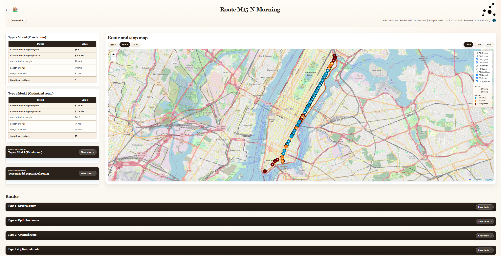
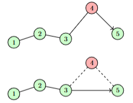

Finding the Addresses That Make a Route Less Profitable
Outlier detection at the intersection of graph theory, route optimization and marginal economics.

At first, this looks like a geographical problem. Imagine a route containing many addresses. One address requires a visible detour and immediately looks like the obvious outlier. But that same address may contain many mailboxes and therefore generate substantial revenue. Removing it could shorten the route while making the route less profitable.
Another address may sit much closer to the main route and look harmless on the map, yet contribute so little revenue that it becomes the real economic weak point. That is the tension this project starts from: distance is visible, but marginal economic contribution is what matters.
An outlier in this project is not defined by how unusual an address looks in the data. It is defined by how the route's contribution margin changes when that address, or a group of addresses, is removed.
- Business question. What can we remove without hurting margin?
- Mathematical lens. Graph theory, route optimization and marginal economics.
- Implemented scope. Type 1, Type 2 and hybrid search.
The problem
Each route unit contributes revenue through its mailboxes or other economic weight, but it also adds travel cost. That means the best route is not necessarily the route with the shortest geometric path. A unit can be far away and still be worth serving. Another can be close by and still reduce the route's contribution margin if it adds too little revenue relative to the distance it forces the route to take.
The analytical goal is therefore not to ask which address is far away. The real question is whether removing an address, or a small subset of addresses, improves the route economically.
Why distance alone is not enough
- A geographically distant address may carry enough mailboxes to justify the extra travel cost. Distance alone does not make it an outlier.
- A nearby address with little demand can still be economically weak if the route structure makes it expensive to include.
What do we mean by outlier?
In classical statistics, an outlier is a point that looks unusual relative to the rest of the data. Here the definition is different. The project treats a route unit as interesting when removing it, alone or together with others, changes the route's contribution margin sufficiently positively.
A route unit is interesting when removing it, alone or with others, raises the route's contribution margin enough to pass the configured significance threshold.
This means the site deliberately avoids z-scores, isolation forests, IQR rules or generic anomaly detection. The object is not statistical surprise. The object is marginal economic effect.
Routes as graphs
The next step is to move from narrative to model. The route is represented as a weighted directed graph, and the remainder of the documentation turns that graph into a cost model and a subset search problem.

The graph is directed because the routed distance from one stop to another need not equal the reverse distance. That asymmetry is not a cosmetic detail; it changes the optimization problem.
To determine the route effect rigorously, we now need a mathematical representation of the route, its cost and the economic effect of removing part of it.
Two questions
| Type | Question |
|---|---|
| Type 1 | What happens if we remove addresses but preserve the existing route sequence? |
| Type 2 | What happens if we remove addresses and then optimize the remaining route? |
Those two questions are the backbone of the solution. The next pages turn them into notation, algorithms and an actual implementation.